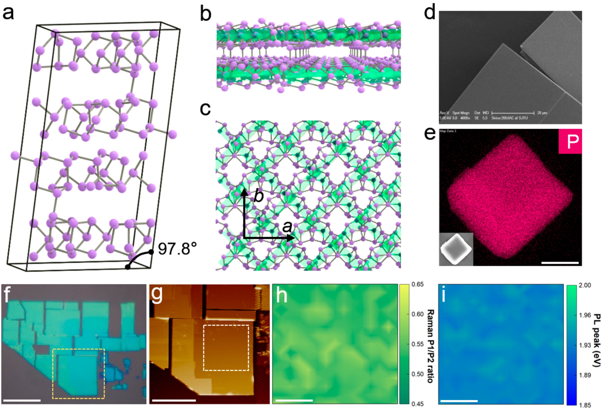
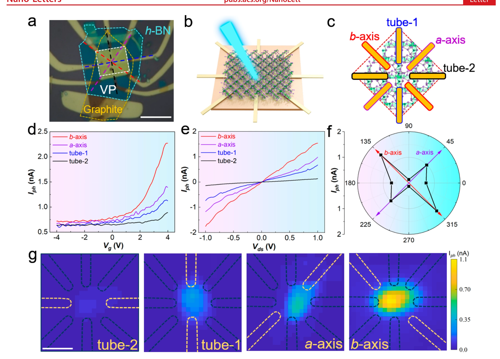
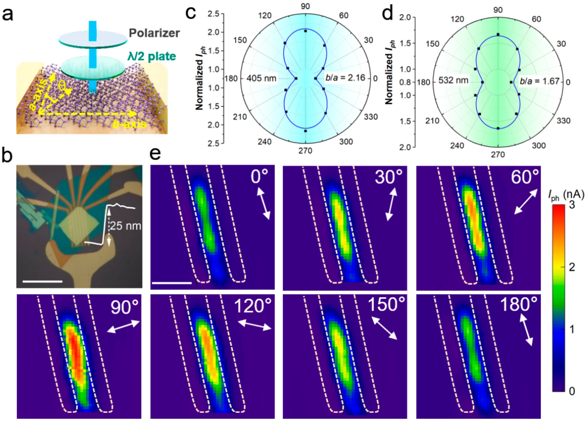
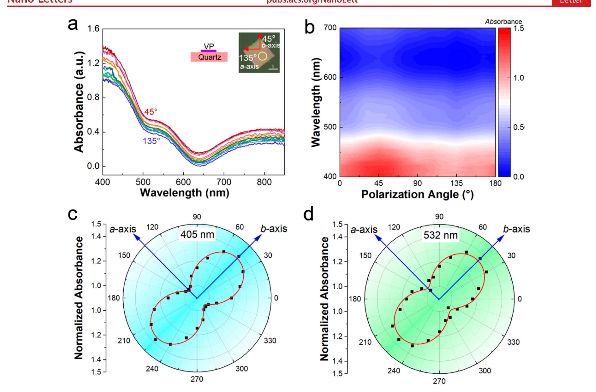

低对称紫磷：从晶体结构到偏振感知
紫磷晶体结构与材料表征
与六方对称的许多二维材料不同，紫磷的原子骨架由交联管状单元组成，沿不同晶轴具有不同的键连接、电子轨道耦合与晶格振动。显微形貌、拉曼光谱和偏振光谱共同确定晶轴方向，并验证剥离薄片保留了这种低对称结构，为后续角分辨电学和光电测试建立坐标基准。

同一薄片沿不同晶轴呈现不同电学行为
研究通过多端电极比较不同面内方向的输运。由于有效质量、轨道重叠和散射过程具有方向依赖性，栅压调控下的沟道电流并非各向同性。方向性电输运与偏振吸收相互叠加，使光生载流子的产生和收集都具有晶轴选择性，面内光电流各向异性比超过 10。

旋转偏振角即可调制光电流
范德华光晶体管在 405 nm 线偏振光下表现出周期性的角度响应。当入射电场方向与强吸收晶轴对齐时，光生载流子数量和沟道电流达到较高值；旋转 90° 后响应减弱，得到 2.16 的偏振二色比。该结果把原子尺度的低对称结构转化为无需外部偏振分析器的电学读出。

把光强与偏振方向作为两维信息同时读取
普通光探测器主要输出光强，而各向异性材料还能提供偏振方向信息。紫磷器件可利用单个像素区分不同线偏振状态，为偏振成像、表面纹理识别、反射抑制和多维机器视觉增加新的信息通道。论文的核心价值不只在于更高的响应，而在于建立“晶体对称性—方向输运—偏振感知”的清晰结构–性能关系。

论文来源
Strong In-Plane Optoelectronic Anisotropy and Polarization Sensitivity in Low-Symmetry 2D Violet Phosphorus
Weilin Chen, An Chen, Ruan Zhang, Jianmin Zeng, Lihui Zhang, Mengyue Gu, Chaofan Wang, Mingyuan Huang, Yanbo Guo, Hongxiao Duan, Chunguang Hu, Wanfu Shen, Baoxin Niu, Kenji Watanabe, Takashi Taniguchi, Jinying Zhang, Jinjin Li, Xinghan Cai, Gang Liu
Nano Letters 23 (2023), 10821–10831
DOI：10.1021/acs.nanolett.3c02951